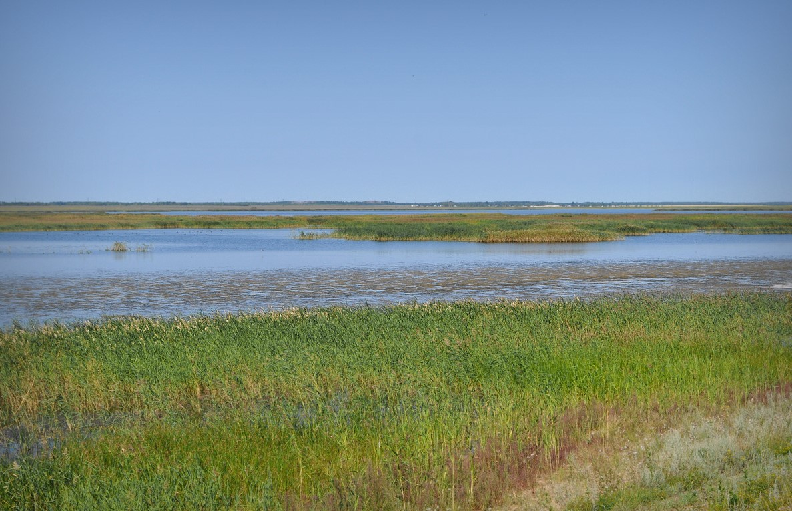

Озёра Омской области


Озеро Камышлово
Расстояние от центра Омска - 150 км
Время в пути - 2 часа
Лучшее время для отдыха - круглый год
Особенности - бесплатное посещение, хорошее место для рыбалки, интересная история озера

Камышлово озеро расположено на долине реки Камышловки. Это солёное озеро очень хорошо известно жителям, так как расположено на территории бывшей Покровской крепости вместе с Покровским и Пикетным озёрами. Источающее умеренное, но конкретное зловоние, оно явно привлекательно для пернатых представителей фауны.
Специфика рельефа и почвы определила состав и конфигурацию озёр. Все они достаточно мелкие и имеют непостоянную береговую линию. Другой характерной чертой этой цепочки озёр является разнообразие химического состава и минерализации воды в каждом из отдельных водоёмов. Так, например, одно озеро пресное(Покровское озеро), а соседнее(Камышлово), через несколько сотен метров, — солёное. Это обусловлено сложным составом грунта, через которые проходят подземные воды, наполняющие озера. В периоды снеготаяния вода поднимается, но остаётся недостаточной для того, чтобы, всем водоёмам слиться вместе и единым камышловским потоком отправиться в Иртыш.
Как я уже говорила, озеро известно своей историей, связанной с Покровской крепостью. В настоящее время от неё остались крепостные валы и рвы, заросшие степными травами. Контур крепости хорошо сохранился, но доступен в своей полноте лишь с высоты полёта птицы или спутника. На одном из берегов стоит памятная табличка «Крепость Покровская. Памятник истории XVIII века. Охраняется законом», сделанная и установленная энтузиастами, а не представителями закона.
Флора и фауна вокруг озера достаточно интересная и разнообразная. Вокруг Камышлового озера растут суккуленты красных и зелёных цветов. Также тут обитает солонец и много других степных растений. Фауна озера состоит в основном из различных видов птиц, например - куликов.
В самом озере обитает большое количество рыб: гольян, елец, лещ, окунь, плотва, ротан, судак, щука, язь, ёрш и др. Поэтому озеро Камышлово - одно из лучших мест для рыбалки. Вход на озеро бесплатный.